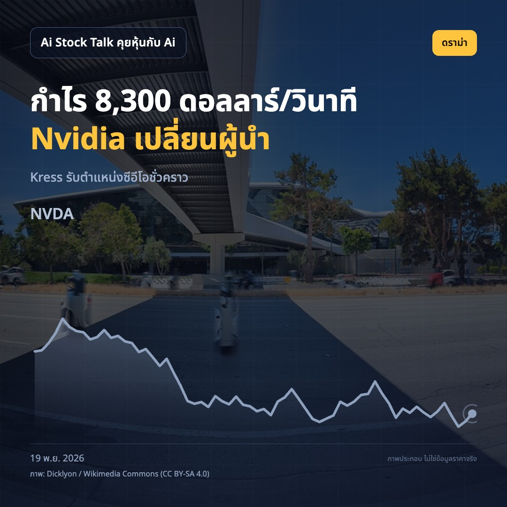
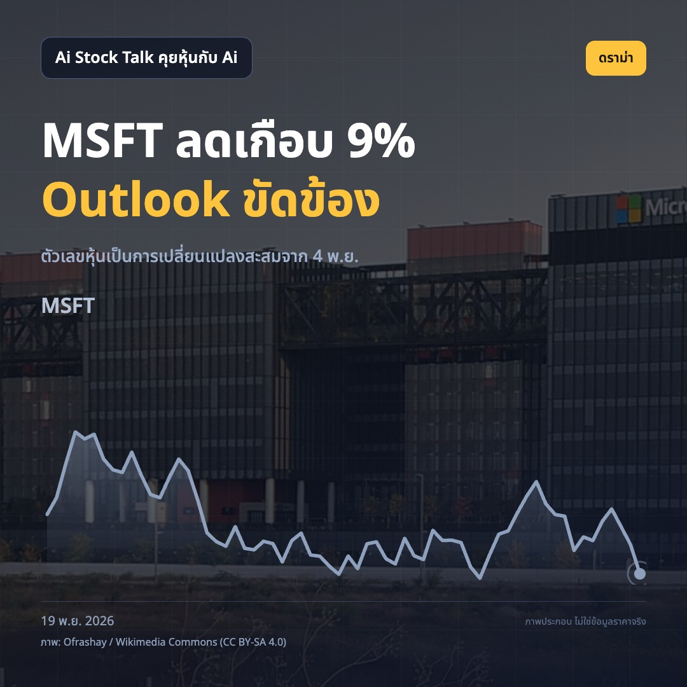

1. Anthropic ระดมทุน IPO กว่า 8.1 หมื่นล้านดอลลาร์

Anthropic ระดมทุน IPO กว่า 8.1 หมื่นล้านดอลลาร์
การเสนอขายหุ้นครั้งนี้มีมูลค่าสูงสุดเป็นประวัติการณ์ แซง SpaceX ตามรายงานของ CNBC TechCrunch รายงานว่าราคาเสนอขายอยู่ที่ 83 ดอลลาร์ต่อหุ้น สูงกว่ากรอบราคาที่คาดไว้ และตีมูลค่าบริษัทแบบนับหุ้นทั้งหมดที่ 1.5 ล้านล้านดอลลาร์ หุ้นมีกำหนดเริ่มซื้อขายบน Nasdaq ภายใต้ชื่อย่อ ANT ในวันพฤหัสบดี
ทำไมต้องสน: ราคา IPO นี้จะเป็นจุดอ้างอิงใหม่ในการมองมูลค่าบริษัท AI นักลงทุนไทยที่ถือหุ้นเทคสหรัฐฯ ควรดูว่าความสนใจใน Anthropic กระทบหุ้น AI ตัวอื่นอย่างไร
ถ้าจะประเมินหุ้น AI คุณให้น้ำหนักกับราคาเสนอขายหรือผลประกอบการมากกว่ากัน?
ที่มา: https://www.cnbc.com/2026/11/18/anthropic-ipo-ai-offering-price.html https://techcrunch.com/2026/11/18/anthropic-reportedly-prices-ipo-at-83-a-share-above-projected-range/
Anthropic #หุ้นAI #หุ้นสหรัฐ
ภาพ: ESO/P. Horálek / Wikimedia Commons (CC BY 4.0)
2. Palo Alto ซื้อบริษัท AI มูลค่า 4.5 พันล้านดอลลาร์ หุ้นบวก 7%

Palo Alto ดีล AI 4.5 พันล้านดอลลาร์ หุ้นบวก 7%
Palo Alto Networks ตกลงซื้อ Applied Compute บริษัทด้าน AI ด้วยมูลค่า 4.5 พันล้านดอลลาร์ ตามรายงานของ CNBC หุ้นปรับขึ้น 7% หลังการรายงานผลประกอบการ บริษัทเดินหน้าซื้อกิจการเพื่อรับความต้องการเครื่องมือความปลอดภัยไซเบอร์ที่เกี่ยวข้องกับ AI MarketWatch รายงานด้วยว่าบริษัทปรับเพิ่มแนวโน้มผลประกอบการ โดยชี้ไปที่สภาพภัยคุกคามและความต้องการที่เห็นข้างหน้า
ทำไมต้องสน: สำหรับนักลงทุนที่มอง AI ผ่านหุ้นความปลอดภัยไซเบอร์ ข่าวนี้มีทั้งดีลซื้อกิจการ ผลประกอบการ และการขยับของราคาหุ้นให้พิจารณาพร้อมกัน
คุณมองดีลนี้เป็นโอกาสเติบโต หรืออยากเห็นผลจากการซื้อกิจการก่อน?
ที่มา: https://www.cnbc.com/2026/11/18/palo-alto-networks-panw-q1-2027-earnings-.html https://www.marketwatch.com/story/palo-alto-networks-stock-soars-as-earnings-show-ai-has-upped-the-stakes-for-cybersecurity-308e34b8?mod=mw_rss_topstories
PaloAltoNetworks #หุ้นไซเบอร์ #หุ้นAI
ภาพ: Diliff / Wikimedia Commons (CC BY 2.5)
3. Nvidia เปลี่ยนผู้นำ ขณะกำไรยังสูงถึง 8,300 ดอลลาร์ต่อวินาที

Nvidia กำไร 8,300 ดอลลาร์ต่อวินาที แต่ผู้นำเปลี่ยน
The Verge คำนวณว่าขณะนี้ Nvidia ทำกำไรราว 8,300 ดอลลาร์ต่อวินาที สะท้อนขนาดธุรกิจที่นักลงทุนกำลังประเมิน อีกด้าน Jensen Huang ออกจากตำแหน่งซีอีโอ และ Colette Kress ขึ้นเป็นซีอีโอชั่วคราว โดย CNBC รายงานว่าเธอได้พบพนักงานทั้งบริษัทแล้ว Microsoft CEO Satya Nadella แสดงความเชื่อมั่นใน Kress ขณะที่ MarketWatch ระบุว่าผู้ถือหุ้นยังจับตาเรื่องผู้สืบทอดตำแหน่ง ระบบนิเวศ AI การควบคุมการส่งออก และจีน
ทำไมต้องสน: นักลงทุนที่ถือ NVDA ต้องประเมินทั้งกำลังทำกำไรของธุรกิจและความไม่แน่นอนด้านผู้นำในเวลาเดียวกัน
สำหรับคุณ ประเด็นใดมีผลต่อการถือ NVDA มากที่สุด?
ที่มา: https://www.theverge.com/tech/1035924/nvidia-visualized-revenue-profit-earnings-after-huang https://www.cnbc.com/2026/11/18/nvidia-interim-ceo-kress-addresses-staff-after-jensen-huang-exit-.html https://techcrunch.com/2026/11/18/microsoft-ceo-satya-nadella-remains-confident-in-nvidia-after-huangs-exit/ https://www.marketwatch.com/story/what-wall-street-analysts-are-now-saying-after-nvidias-beat-and-raise-quarter-9311c85d?mod=mw_rss_topstories
Nvidia #NVDA #หุ้นAI
ภาพ: Dicklyon / Wikimedia Commons (CC BY-SA 4.0)
4. Microsoft เสนอให้พนักงาน 60,000 คนลาออกโดยสมัครใจ

Microsoft เสนอทางออกให้พนักงาน 60,000 คน
Satya Nadella อธิบายเหตุผลที่ Microsoft เสนอเงินชดเชยให้พนักงาน 60,000 คนลาออกโดยสมัครใจในเดือนตุลาคม ตามรายงานของ TechCrunch บริษัทเลือกแนวทางนี้แทนการลดพนักงานครั้งใหญ่ด้วยการเลิกจ้าง ข่าวระบุว่า AI เป็นส่วนหนึ่งของคำอธิบาย แต่รายละเอียดซับซ้อนกว่าการบอกว่า AI เข้ามาแทนคน ตัวเลข 60,000 คนทำให้เรื่องนี้มีน้ำหนักสำหรับผู้ติดตามบริษัทเทคขนาดใหญ่ แม้การเสนอให้ลาออกไม่ได้หมายความว่าทุกคนจะรับข้อเสนอ
ทำไมต้องสน: คนถือ MSFT ควรติดตามว่าการจัดกำลังคนครั้งนี้จะส่งผลต่อการดำเนินธุรกิจและต้นทุนอย่างไร โดยยังไม่มีผลลัพธ์นั้นในข้อมูลที่รายงาน
คุณอยากเห็นข้อมูลอะไรเพิ่มเติมก่อนตัดสินผลของเรื่องนี้ต่อหุ้น?
ที่มา: https://techcrunch.com/2026/11/18/microsoft-ceo-satya-nadella-explains-why-he-asked-60k-employees-to-quit/
Microsoft #MSFT #งานเทค
ภาพ: Ofrashay / Wikimedia Commons (CC BY-SA 4.0)
5. หุ้น Microsoft ลดลงเกือบ 9% จากจุดสูงสุด ท่ามกลางปัญหา Outlook

MSFT ลดลงเกือบ 9% จากจุดสูงสุด 4 พ.ย.
CNBC รายงานว่าหุ้น Microsoft ลดลงเกือบ 9% นับจากวันที่ปิดที่ระดับสูงสุดเป็นประวัติการณ์เมื่อ 4 พฤศจิกายน ตัวเลขนี้เป็นการเปลี่ยนแปลงสะสม ไม่ใช่การขยับของวันเดียว Satya Nadella เรียกเหตุ Outlook ใช้งานขัดข้องว่าเป็นผลจากหลายปัจจัยที่เกิดพร้อมกัน ขณะบริษัทกำลังเผชิญคำถามเรื่องบริการซอฟต์แวร์ การหยุดชะงักของบริการจึงเป็นอีกเรื่องที่ผู้ถือหุ้นต้องติดตามควบคู่กับกระแส AI ของ Microsoft
ทำไมต้องสน: นักลงทุนไทยที่ถือ MSFT ควรแยกผลกระทบของเหตุขัดข้องออกจากการเปลี่ยนแปลงราคาหุ้นสะสม ก่อนตีความว่าตลาดกังวลเรื่องใด
สำหรับคุณ เหตุ Outlook ขัดข้องเปลี่ยนมุมมองต่อหุ้น Microsoft หรือไม่?
ที่มา: https://www.cnbc.com/2026/11/18/microsoft-put-the-ai-threat-to-software-behind-it-then-came-the-outage.html
Microsoft #MSFT #Outlook
ภาพ: Ofrashay / Wikimedia Commons (CC BY-SA 4.0)
6. 3 เขตการศึกษาใหญ่สหรัฐฯ พิจารณาเลิกใช้ Google Search

3 เขตการศึกษาใหญ่พิจารณาทางเลือกแทน Google
เขตการศึกษาในนิวยอร์ก ลอสแอนเจลิส และชิคาโก กำลังพิจารณาทางเลือกอื่น หลัง Google ระบุว่าโรงเรียนที่ปิดฟีเจอร์ AI จะไม่สามารถใช้ Search ได้ ตามรายงานของ The Verge ตั้งแต่ปีหน้า โรงเรียนจะไม่มีทางเลือกให้ปิดฟีเจอร์ที่ใช้ Gemini แล้วคง Search ไว้ ผู้บริหารฝ่ายการศึกษาของ Google ระบุว่า Search กับ AI เชื่อมกันอย่างลึกซึ้ง ประเด็นนี้ทำให้การนำ AI เข้าไปในผลิตภัณฑ์เดิมของ Google กลายเป็นเรื่องที่ลูกค้าบางกลุ่มต้องตัดสินใจ
ทำไมต้องสน: สำหรับคนติดตามหุ้น Alphabet คำถามคือการผูก Search กับ Gemini จะรักษาผู้ใช้กลุ่มโรงเรียนไว้ได้เพียงใด ยังไม่มีข้อมูลในรายการข่าวว่ามีเขตใดเลิกใช้จริง
ถ้าเป็นโรงเรียน คุณจะเลือกใช้ Search ต่อพร้อม AI หรือหาทางเลือกอื่น?
ที่มา: https://www.theverge.com/ai-artificial-intelligence/1037151/school-districts-ditching-google
Google #Gemini #หุ้นเทค
ภาพ: Diliff / Wikimedia Commons (CC BY 2.5)